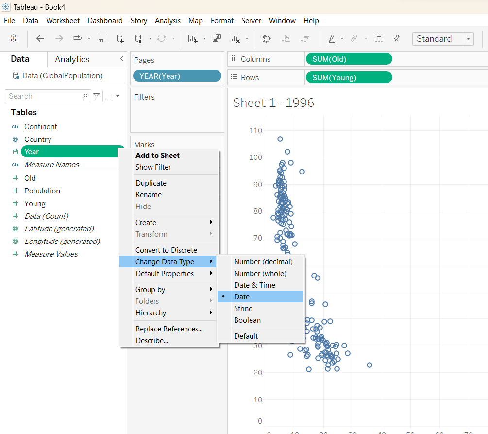

In-class Exercise 6
It’s About Time: Time-series in Tableau
Data
Arrivals_by_air
The data is wide and short
Highlight all the countries and select Pivot. Rename the column to Country and Arrivals
Pull the Month-Year to Columns and Arrivals to Rows and Country to Filters.


Cycle plot : To see how the seasonality change over period
This plot reveals the pattern in the separate month. For the plot above, we observe that the August of every year always have high arrivals but the number is particular high in 2018.
Calendar Heatmap

Slopegraphs
Good to see how the ranking change over time in comparison with other group.
Animated bubble plot
